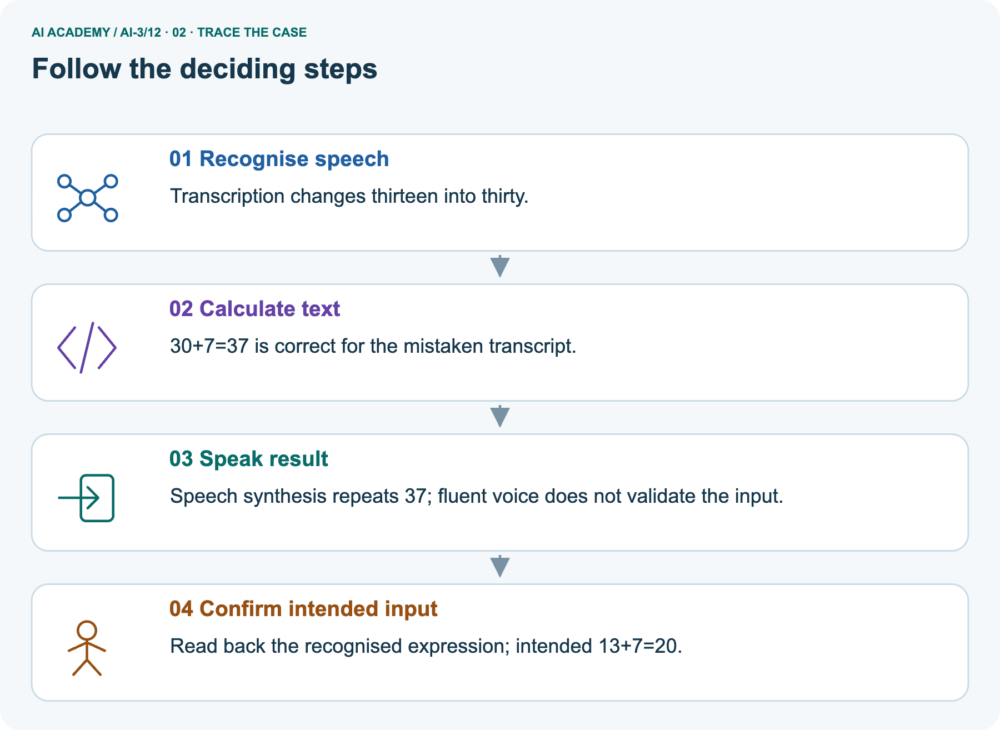
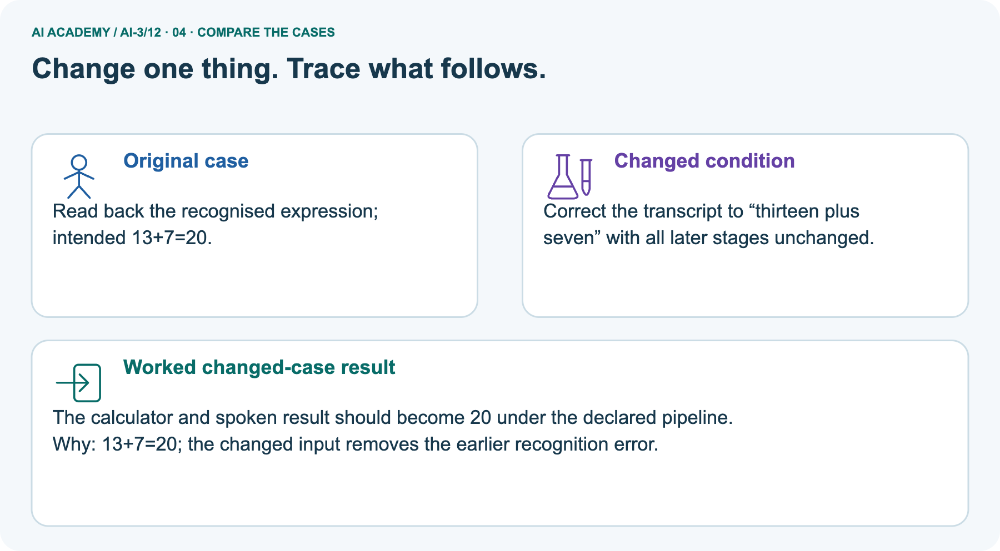
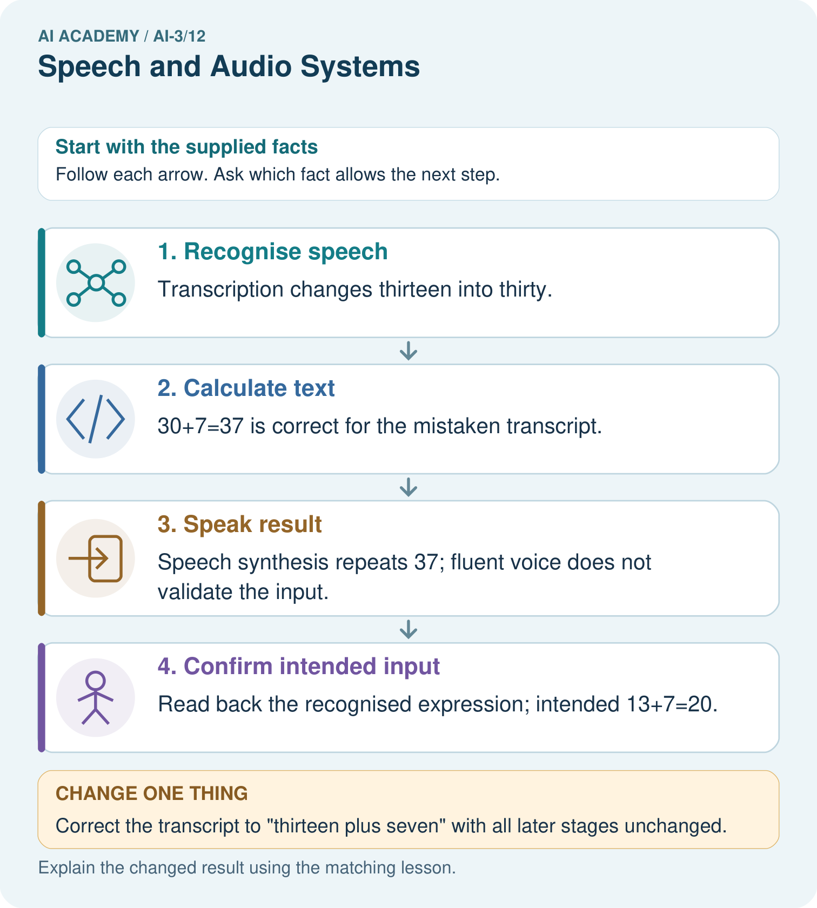
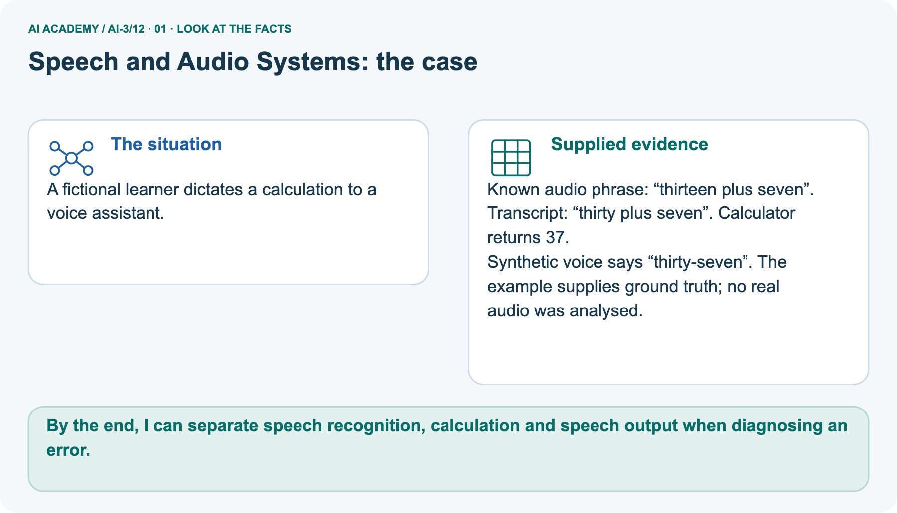
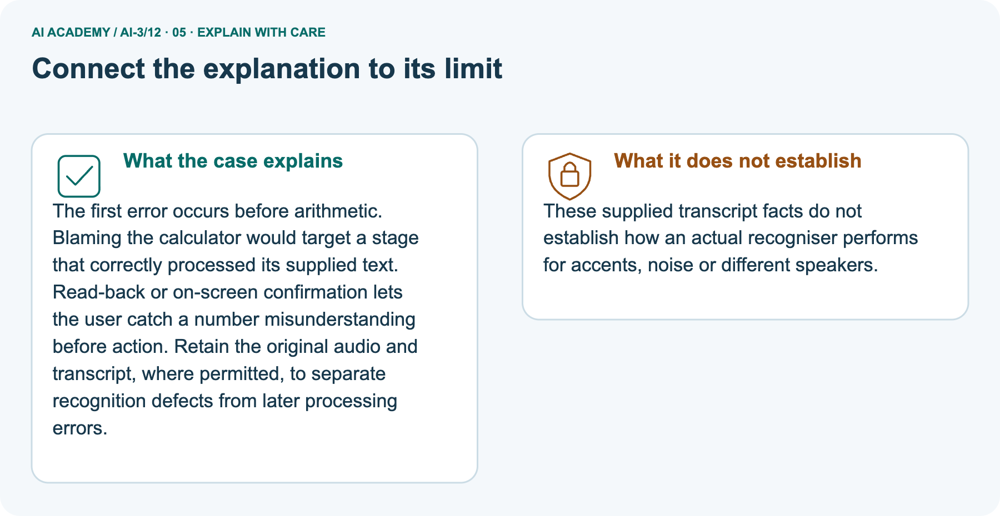
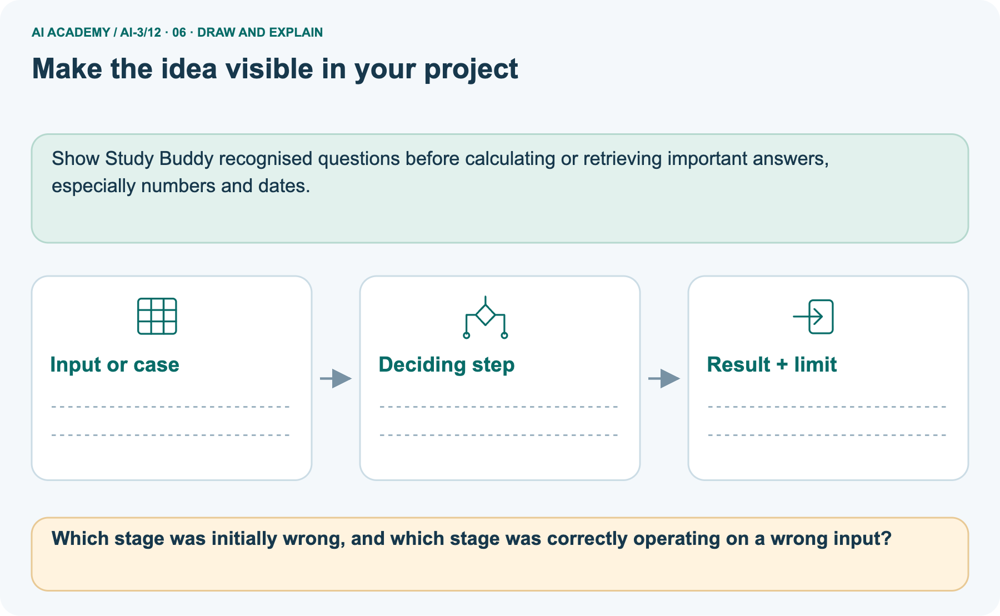

AI Academy · Level 3 · Grade 8 · Week 12 · Student lesson
Speech and Audio Systems
Learn to understand, design, build, test and explain AI systems responsibly.
Project: Verified Study Buddy
THE CONNECTED WEEK
Keep the source. Trace each stage. Locate the first supported mismatch.
Diagnose speech-pipeline errors without treating fluent output or absent recordings as verification.
Keep one habit: Stage contracts → known phrase trace → separate unresolved conflict → four complete cards → independent calculation.
Main lesson · Section 1
At which speech stage did the first supported mismatch occur?
Trace the source, transcript, interpretation, calculation and spoken result separately.
Your learning goals
I can explain the mechanism and terminology of speech pipelines and multimodal evidence.
I can apply the stated procedure to a new case with a traceable result.
I can identify an assumption or limitation and design a revealing follow-up.
Recall separate criteria for separate stages
Close your notes first. A rough first answer helps us choose the right starting point; it is not a score for your ability.
Recall Visual Composition: object presence, spatial relation and arrow meaning need separate checks. In a speech pipeline, recognition, interpretation, calculation and spoken output likewise need their own evidence.
Your end goal
By the end, I can separate speech recognition, calculation and speech output when diagnosing an error.
Earlier wording, alternatives and picture transcripts
Your learning target
Remember before reading
Without opening the old lesson, explain one key idea from Visual Composition. Give an example and a mistake that the idea helps you avoid.
Without opening the old lesson, explain one key idea from Prompt Evaluation. Give an example and a mistake that the idea helps you avoid.
Without opening the old lesson, explain one key idea from Examples and Rubrics. Give an example and a mistake that the idea helps you avoid.
After trying, check the relevant lesson or ask your teacher. Change the part of your explanation that the evidence shows was wrong.
Week 12: Speech and Audio Systems
Speech interaction includes capture, recognition, interpretation, and response stages.

CREATOR MISSION
Trace errors from noisy audio to wrong action.
Creator name and date:
Readiness for the connected explanation
This week’s end goal
Main lesson · Section 2
A later stage can correctly process an earlier mistake
A fluent spoken result does not verify the intended input.
The pipeline and error-propagation idea
A multimodal pipeline may transcribe speech, inspect an image and generate a response. Errors at one stage can propagate even when later stages run correctly.
Use supplied ground truth without claiming a real recogniser run
Begin by writing the question the procedure is intended to answer. Identify the information already supplied, the information it will produce and the information still missing.
These are constructed classroom examples; they do not require live accounts, private records or an external service. Do not treat a plausible explanation as a measured outcome.
Earlier wording, alternatives and picture transcripts
PICTURE STORY
Notice → Predict → Explain
Begin with visible evidence. Do not explain more than the picture and information support.
MYSTERY
The learners must use speech and audio systems to solve a problem. What information do they have? What decision or calculation do they make? What would count as evidence that it worked?
Three observations (what you can point to):
My prediction and the clue supporting it:
A closer explanation
Main lesson · Section 3
Keep a stage record before assigning blame
An unavailable source limits what the evidence can diagnose.
Preserve modality, source reference and intermediate outputs
Track source modality, segment/time references, transcription, interpretation and final claims separately. Compare conflicting evidence without assuming one modality always wins.
Ask for clarification when the task needs unresolved information.
Read the explicit stage contracts
| Stage | Output to inspect | Evidence needed for its check |
|---|---|---|
| Capture | Recorded audio signal | Available source recording and capture conditions |
| Recognition | Transcript words | A supplied reference utterance or suitable replay |
| Interpretation | Operands and operation | Agreement with the confirmed transcript |
| Calculation | Numeric result | Independent arithmetic using the parsed expression |
| Speech output | Spoken rendering | Agreement with the intended result text/number |
Separate given, derived and unknown facts
Before applying the procedure, write its units, denominator or decision boundary where relevant. A partner should be able to repeat each step using the same inputs.
If a required input is absent or violates the stated contract, record that condition explicitly instead of quietly replacing it with a convenient value.
Explain the deciding stage
Point to the input, the deciding step and the result in this week’s visual. Explain the same step in ordinary words. A picture helps when you can say what each part represents.
Earlier wording, alternatives and picture transcripts
VISUAL MECHANISM
Input → Process → Output
Trace the information. At each stage, ask what changed and how you could test it.

↓

↓

Which stage could fail even when the other two are correct? Explain:
A closer explanation
Speech pipelines and multimodal evidence — evidence trace
Connect the picture and the explanation
Main lesson · Section 4
Compare confirmed recognition errors with unresolved source conflicts
A written record does not automatically settle what an absent recording said.
Four pictures with a purpose

Normal case: predict the result and deciding evidence.

Boundary case: identify the exact limit.

Missing information: name what must be clarified.

Transfer case: explain which procedure still applies.
Choose a revealing case
Which case is most likely to reveal a hidden assumption? Why?
Predict the supplied changed case
Change: Correct the transcript to “thirteen plus seven” with all later stages unchanged.
Check after predicting
Prediction: The calculator and spoken result should become 20 under the declared pipeline.
Reason: 13+7=20; the changed input removes the earlier recognition error.
Earlier wording, alternatives and picture transcripts
CASE GALLERY
Four Tests, Four Kinds of Evidence
A system is not understood until it survives more than one comfortable example.
NORMAL CASE: predict and name evidence. BOUNDARY CASE: predict and name evidence.
MISSING INFORMATION: predict and name evidence. TRANSFER CASE: predict and name evidence.
Change one thing in the pictured case
Main lesson · Section 6
Trace a known thirteen/thirty mismatch
Keep the separate unresolved fifteen/fifty inventory case distinct.
Read the known phrase, transcript and spoken result
A fictional learner dictates a calculation to a voice assistant.
Known audio phrase: “thirteen plus seven”. Transcript: “thirty plus seven”. Calculator returns 37.
Synthetic voice says “thirty-seven”. The example supplies ground truth; no real audio was analysed.
Trace the earliest mismatch and later correct processing



Read the picture one step at a time
The first error occurs before arithmetic. Blaming the calculator would target a stage that correctly processed its supplied text. Read-back or on-screen confirmation lets the user catch a number misunderstanding before action.
Retain the original audio and transcript, where permitted, to separate recognition defects from later processing errors.
Clarify the counterfactual change
Here the known phrase is supplied as classroom ground truth; no actual recording or recogniser is tested. The parsed expression follows the supplied transcript. Correcting the transcript while keeping later stages unchanged means using the same interpretation, arithmetic and speech-rendering rules with new input; it does not freeze their old output text. The corrected13+7 result is20.
Predict correcting the transcript
Change one thing: Correct the transcript to “thirteen plus seven” with all later stages unchanged. Predict the result before checking the explanation. What remains the same?
Check after predicting



State limits on recogniser-performance claims
These supplied transcript facts do not establish how an actual recogniser performs for accents, noise or different speakers.
Read the labelled picture: Which stage was initially wrong, and which stage was correctly operating on a wrong input?
Separate review · Unavailable audio versus inventory
Audio transcript reads fifteen boxes; a clear written inventory says fifty boxes. The original audio is unavailable and the assistant reports fifteen as certain.
There is an unresolved quantity conflict and no audio replay. Preserve both sources and ask the responsible person; certainty is unsupported.
Earlier wording, alternatives and picture transcripts
WORKED EVIDENCE
Reason Step by Step
Predict first. Then check each step. A correct answer without visible reasoning is incomplete evidence.

1. Learner says ‘define erosion’ in a noisy room.
2. Recognizer outputs ‘design erosion.’
3. Intent stage follows the wrong transcript.
4. Display transcript, allow correction, and avoid high-consequence action from uncertain audio.
Recalculate, retrace, or restate the reasoning in your own representation:
CHECK Did the evidence answer the exact question? Did the total, path, or source record stay consistent?
A closer explanation
Compare the intermediate evidence with the final statement. Explain why each number or decision follows from the stated inputs.
The conclusion belongs to this scenario and procedure; changing the inputs, evaluation population or authority can change what it establishes. Retain the raw record so a later revision can be compared honestly.
Learn from the worked case
Cover the result before checking it. Say what is given, choose the procedure, and follow one step at a time. Then uncover the result and explain your first mismatch. Ask why a step is allowed, not only what number it produces.
A pictorial worked case: Speech and Audio Systems
The facts we will use



Why this result follows
What this example does not establish
Main lesson · Section 7
Find the wrong inference from a correct downstream output
Check the input to a stage as well as its output.
Repair the fluent-voice argument
Claim to repair: The voice said37clearly, so the learner must have asked30+7. The supplied reference utterance is13+7, while the transcript says30+7. Correct arithmetic and fluent synthesis can preserve that earlier error. In the separate boxes case the original audio is unavailable, so a conflict with inventory cannot by itself locate a recognition error. State the first supported mismatch and what remains unknown.
Propose a stage-specific check
Earlier wording, alternatives and picture transcripts
ERROR DETECTIVE
Compare → Diagnose → Repair
Do not patch the answer. Find the earliest unsupported assumption, wrong step, or weak evidence.

| Evidence record | Expected | Actual | Likely cause / next test |
|---|---|---|---|
| normal case | works | ||
| boundary case | stated rule | ||
| missing input | safe response | ||
| fresh transfer | generalizes |
Repair one cause. Why is this repair better than changing several things?
A closer explanation
Complete the supported workbook tasks before attempting W4 independently. Record any hints or help used. After feedback, use the teacher's fresh retry rather than copying the earlier answer.
For a project, select a relevant new case, predict the outcome from the declared rule and preserve the result alongside any revision.
Main lesson · Section 8
Practise the unresolved conflict with less help
Do not invent a recording or authority rule.
The stage/authority evidence boundary
A stage-level accuracy or authority policy does not establish every modality agrees or every downstream claim is supported.
Complete the separate fifteen/fifty W2 record
Practise with less help: Trace the worked case
Use workbook W2 for the connected example “Speech pipelines and multimodal evidence”. First fill the input and rule boxes. Try the middle steps before asking for a hint. After a hint, try the next step yourself.
| Plan | Do | Check |
|---|---|---|
| What is given? Which rule or procedure applies? | Record each intermediate step. | Does the result follow? What remains unknown? |
Repair an all-future-cases claim
Use the worked case for Speech pipelines and multimodal evidence. Proposed explanation: “The worked result establishes every future case”. Decide whether this explanation is supported.
Point to the step or supplied fact that decides; explain your repair if needed.
Answer on your own before discussion. If you are unsure, say which step you need help with.
Check your reasoning
Explain the known thirteen/thirty picture
Which stage was initially wrong, and which stage was correctly operating on a wrong input?
Explain the picture
Reserve the independent nineteen/ninety case
This is supported practice. Keep the separately named independent case for an attempt before feedback.
Earlier wording, alternatives and picture transcripts
LOGIC STUDIO
Specify Before You Run
Prompts, schemas, retrieval, tool calls, and code are inspectable parts of one AI product.

SET task, audience, constraints, output_schema LOAD approved_context or retrieval_result CALL model or allowed_tool VALIDATE fields, claims, citations, and safety IF evidence missing: ask, retrieve, or abstain RETURN useful output + source trail + limitations
Trace one input. Which line changes the state or chooses a path?
A closer explanation
A useful check asks what would make the reasoning fail. Distinguish a failure to execute the declared procedure from a weakness in the procedure itself.
The first may require a correction; the second requires an explicitly revised method and new evidence. Preserve unsuccessful cases so an improved result cannot hide the original problem.
Explain your trace to a partner. Your partner points to one step to check. Swap roles on the next case. Each person writes their own explanation.
Main lesson · Section 9
Diagnose four complete stage records
Parsed operands are supplied so a calculation error can be distinguished from interpretation.
The four supplied cards
| Card | Known source | Transcript | Parsed input | Calculator | Spoken/final output |
|---|---|---|---|---|---|
| A | thirteen plus seven (given reference) | thirty plus seven | 30+7 | 37 | thirty-seven |
| B | thirteen plus seven (given reference) | thirteen plus seven | 13+7 | 27 | twenty-seven |
| C | thirteen plus seven (given reference) | thirteen plus seven | 13+7 | 20 | twenty-seven |
| D | Original audio unavailable; inventory says50boxes; no source priority supplied | fifteen boxes | No arithmetic task | not applicable | fifteen boxes for certain |
Trace the first mismatch and preserve limits
Four complete paper trace cards: for A–C compare the supplied reference phrase with transcript, then transcript with parsed input, independent arithmetic with calculator output, and intended number with spoken rendering. Record the first supported mismatch, later stages that agree with their inputs, and one revealing check.
In D preserve the transcript/inventory conflict and absent replay; the certainty claim is unsupported, but the first technical stage failure cannot be identified from these facts. Neither modality has a declared priority. Ask for the missing evidence instead of choosing a convenient quantity. These are constructed records, not real audio analysis, measured accent/noise performance or actual speech synthesis.
Keep the independent nineteen/ninety trace withheld.
Keep the evidence record
| Test / input | Prediction | Actual | Evidence / calculation | Change or keep? |
|---|---|---|---|---|
| normal | ||||
| boundary | ||||
| missing | ||||
| fresh transfer |
What did the hardest test teach you that the normal test did not?
Before trying: what do I expect, and why? While trying: which step could first go wrong? Afterwards: what did I actually observe, and what should change? Keep “not run” if you only traced the procedure.
Earlier wording, alternatives and picture transcripts
EVIDENCE LAB
Predict → Test → Record → Explain
Keep expected and actual results separate. Surprises are useful data when recorded honestly.

Use the four complete paper stage records, including parsed operands. Identify the first supported recognition, calculation or spoken-output mismatch; keep the unavailable-audio inventory conflict unresolved. No recording, live recogniser or actual synthesis is tested.
Plan → try → check
Main lesson · Section 14
Try alone: locate the fresh nineteen/ninety mismatch
Distinguish the first wrong representation from correct arithmetic on it.
Independent record and scope
Known audio says “nineteen minus six”. Transcription says “ninety minus six”; the calculator returns84. Locate the first error and propose a check.
The independent task supplies the known phrase and transcript as classroom facts, not actual audio. Treat the parsed operands as90and6 with subtraction, as stated by the calculator trace. Check its arithmetic against that received input and separately recover the intended reference expression. Do not infer real recogniser accuracy or claim a replay was performed.
Your first attempt and help record
Attempt this case before feedback. Record any help. Earlier examples below are further practice; a case already practised with feedback cannot establish fresh transfer.
Your teacher has the independent answer and scoring criteria. Complete the matching workbook week to keep your practice evidence together.
Use feedback afterwards
Attempt the independent case before hints. Record whether you worked alone, used a hint or followed a model. After feedback, fix the first unsupported step and explain why it changed.
A later check uses a changed case, not a copied answer.
Earlier wording, alternatives and picture transcripts
Independent case: Changed independent case
Week 12 Independent application
Close the worked explanation. Apply the idea to this different question without copying.
A recording says fifteen, but the transcript says fifty. The summary repeats fifty. Where did the error enter, and what should be checked first?
My answer, with a trace, calculation or supporting evidence
Create and test
Change one relevant detail. Predict the result before testing. Include a boundary or missing-information case when it helps reveal a limit.
My changed input and expected result
Connect to your project
Show transcripts and require confirmation before saving memory or using tools.
The evidence I will keep
Transfer practice from the original programme
Audio says 'sixteen divided by four'; transcript says 'sixty divided by four'; calculator returns 15. Which stage first fails? What would a useful confirmation show?
Use feedback to improve
Main lesson · Section 11
Make the project’s recognised question inspectable
Check important numbers before downstream decisions.
This week’s concrete contribution
For the Verified Study Buddy, show the recognised question and parsed numbers/operation before using them in important calculations or actions. Preserve the confirmed input and stage evidence needed for the declared task; use teacher-managed fictional records in this lesson. A read-back can expose a misunderstanding, but a fluent confirmation is not itself proof of correctness.
Keep recognition, retrieval, calculation and response claims separately checkable.
Show Study Buddy recognised questions before calculating or retrieving important answers, especially numbers and dates.
Keep the checkpoint and human choice
THIS WEEK’S CHECKPOINT Show transcripts and require confirmation before saving memory or using tools.
SYSTEM MAP Learner need → prompt/schema → approved sources/retrieval → model/tool → structured answer → verification → human decision
What will you add, change, or verify in the project this week?
What should remain under human control?
RESPONSIBLE DESIGN Collect only necessary information. Show uncertainty and limits. Never confuse fluent output with verified truth.
Earlier wording, alternatives and picture transcripts
CUMULATIVE PROJECT
Verified Study Buddy
Every week adds one inspectable piece. The system must show how it reached a result.

Evidence for your project
Main lesson · Section 16
Finish: name the first supported error and the missing evidence
A correct later step cannot establish that the original input was right.
Explain without notes
Close your notes. Explain this goal in your own words: Explain the mechanism and terminology of speech pipelines and multimodal evidence
Plan a changed-case return
If you are unsure, return to the worked picture and explain one arrow. If you are ready, change an input or assumption and justify your prediction.
Save your workbook evidence. At the next review, try a different case before opening your old answer.
Reference bank and extra practice
Choose the reference that helps your next step.
Your quick word guide
Reference · Section 5
Your quick word guide
Use the words to explain a particular step, record or limit.
Core vocabulary
| Word | My own example | Not this / boundary |
|---|---|---|
| capture | Record a signal, observation or item of information for later use. | |
| speech recognition | Converting spoken audio into an estimated sequence of words. | |
| intent | The goal a user is trying to achieve, which may need clarification. | |
| synthesis | Combining information into a new account or output while preserving its meaning and support. |
Terms for the connected explanation
| Word | Meaning |
|---|---|
| Modality | A form of information such as audio, image or text |
| Transcription | A text representation of speech |
| Error propagation | An earlier error affecting later processing |
Earlier wording, alternatives and picture transcripts
VOCABULARY LAB
Words You Can Use to Reason
A definition matters when you can recognize the idea, use it, and contrast it with a near-miss.


Words used in the closer explanation
Choose a stronger thinking challenge
Reference · Section 10
Choose a stronger thinking challenge
Choose the next useful challenge rather than treating the whole ladder as compulsory.
Pick your next step
1 • NAME: Define the concept without repeating the textbook.
2 • TRACE: Show the information, state, branch, calculation, or evidence path.
3 • APPLY: Solve a different example independently.
4 • CHALLENGE: Find a boundary case, counterexample, or unfair outcome.
5 • EXPLAIN LIMITS: Say when the result should not be trusted or used alone.
My strongest evidence of independent understanding:
Earlier wording, alternatives and picture transcripts
MASTERY
From Knowing the Word to Owning the Idea
Move upward only when you can produce evidence without copying the worked example.

Reference: check your explanation
Reference · Section 12
Reference: check your explanation
Use after practice. Diagnose a new calculation trace independently is the selected independent case.
Check the evidence and its limit
1. My fresh example, trace, calculation, or design:
2. My evidence that it works (include a boundary or missing-data case):
3. One limitation, fairness concern, or situation needing human review:
Self-check and record
SELF-CHECK □ I explained the mechanism □ I used evidence □ I tested a fresh case □ I named a limitation □ I can answer ‘why?’
Earlier wording, alternatives and picture transcripts
INDEPENDENT MASTERY PROOF
Checklist for explaining this week’s idea
Use after practice. Diagnose a new calculation trace independently is the selected independent case.

EXPLANATION CHECK Require the first supported mismatch, correct downstream arithmetic, intended result and a revealing confirmation check.
Extra practice: Trace a speech error through the system
Reference · Section 13
Extra practice: Trace a speech error through the system
Try the question before opening its worked explanation.
Read the supplied case and question
A speech tool hears fifteen as fifty, then calculates correctly using fifty.
Where did the error enter?
Your explanation
Which detail supports the answer, and why does it matter?
Check after trying
Transcription supplied the wrong number. Confirm the transcript or ask for clarification. Correct arithmetic cannot repair wrong input.
| Evidence or stage | Value or result |
|---|---|
| Speech | Fifteen |
| Transcript | Fifty, the first error |
| Calculator | Correct arithmetic using fifty |
| Result | Wrong for the original request |
Earlier wording, alternatives and picture transcripts
Week 12 Worked case
Use the supplied details to practise the weekly concept before attempting the independent question. This case extends the illustrated lesson.
The situation
The question
Worked explanation
Explain it in your own words
Trace the supplied case visually
Trace a speech error through the system
A speech tool hears fifteen as fifty, then calculates correctly using fifty.
Where did the error enter?
Transcription supplied the wrong number. Confirm the transcript or ask for clarification. Correct arithmetic cannot repair wrong input.
Reference: original lesson checklist
Reference · Section 15
Reference: original lesson checklist
Use an additional checklist when it helps inspect your explanation.
Targets and evidence
| By the end, I can | How I will show it |
|---|---|
| Explain the mechanism and terminology of speech pipelines and multimodal evidence | Explain the deciding step, show a trace or test, and state one limit. |
| Apply the stated procedure to a new case with a traceable result | Explain the deciding step, show a trace or test, and state one limit. |
| Identify an assumption or limitation and design a revealing follow-up | Explain the deciding step, show a trace or test, and state one limit. |
Keep your route and first prediction
Remember → watch and explain → try with help → investigate → try independently → keep project evidence. Your teacher may spread this lesson across several classes.
Keep your first prediction. Compare it with what the evidence shows and explain any change.
Earlier wording, alternatives and picture transcripts
Start with this question: A fictional learner dictates a calculation to a voice assistant.
Extra practice: pictures, repair and feedback
Reference · Section 17
Extra practice: pictures, repair and feedback
Attempt each question before opening its explanation. Use one browser or paper copy.
First supported question
A fictional learner dictates a calculation to a voice assistant.
Which labelled step matches this detail? Read back the recognised expression; intended 13+7=20.
1. Confirm intended input
2. Recognise speech
3. Calculate text
4. Speak result
Hint if needed: Read the steps in the pictorial case. Match the supplied detail to the stage that performs or records it.
Practice 1: explain the deciding evidence
Check the first explanation
After your attempt, compare with the supported explanation: Confirm intended input Read back the recognised expression; intended 13+7=20. The first error occurs before arithmetic.
Blaming the calculator would target a stage that correctly processed its supplied text. Read-back or on-screen confirmation lets the user catch a number misunderstanding before action.
Retain the original audio and transcript, where permitted, to separate recognition defects from later processing errors.
Changed-case question
Changed-case practice: Correct the transcript to “thirteen plus seven” with all later stages unchanged. Which conclusion is supported by the supplied facts?
1. We can decide the result without examining the changed input or the procedure.
2. This one example guarantees correct results for every future input.
3. The calculator and spoken result should become 20 under the declared pipeline.
Hint if needed: Use the changed condition and the deciding step in the pictorial trace. The answer must say what follows from those facts.
Practice 2: explain the deciding evidence
Check the changed case
After your attempt, compare with the supported explanation: The calculator and spoken result should become 20 under the declared pipeline. 13+7=20; the changed input removes the earlier recognition error.
Repair and save your work
Review Visual Composition (ai-3/11). Goal: Check object counts, spatial relations and arrow meaning separately. Short practice: Which checks pass after that single change, and what still needs repair?. Return to this week and explain what you changed.
Review Prompt Evaluation (ai-3/9). Goal: Explain the mechanism and terminology of controlled prompt experiments. Short practice: Why is B’s selection defensible here without calling it universally superior?.
Return to this week and explain what you changed.
Review Examples and Rubrics (ai-3/6). Goal: Distinguish a format example from approved factual evidence. Short practice: Explain why neither original nor changed draft is a full pass, and provide a complete repaired card.. Return to this week and explain what you changed.
Use Download completed work in the hosted lesson to export your answers, reflections, practice feedback and code-run evidence. Open the HTML copy to read or print it.
Drafts stay in this browser when storage is available; clear drafts on a shared device.
Earlier wording, alternatives and picture transcripts
Use this supported practice once, in the browser or on paper. Keep the reserved independent assessment for a separate first attempt before teacher feedback.
Repair a missing building block
Keep your completed work
Reference: the six-picture journey
Reference · Section 18
Reference: the six-picture journey
Revisit the picture that serves the current question; key diagrams already sit beside the main explanation.
01. Speech and Audio Systems: the case



A fictional learner dictates a calculation to a voice assistant. Supplied facts: Known audio phrase: “thirteen plus seven”. Transcript: “thirty plus seven”. Calculator returns 37. Synthetic voice says “thirty-seven”.
The example supplies ground truth; no real audio was analysed.
Point to the given fact that matters most. Explain why it matters.
02. Follow the deciding steps
Recognise speech: Transcription changes thirteen into thirty. → Calculate text: 30+7=37 is correct for the mistaken transcript. → Speak result: Speech synthesis repeats 37; fluent voice does not validate the input. → Confirm intended input: Read back the recognised expression; intended 13+7=20.
Point to each numbered stage and explain which recorded input it uses.
03. Speech pipelines and multimodal evidence — evidence trace
![Speech pipelines and multimodal evidence — evidence trace. Audio transcript reads fifteen boxes; a clear written inventory says fifty boxes. The original audio is unavailable and the assistant reports fifteen as certain. | Track source modality, segment/time references, transcription, interpretation and final claims separately. Compare conflicting evidence without assuming one modality always wins. Ask for clarification when the task needs unresolved information. | There is an unresolved quantity conflict and no audio replay. Preserve both sources and ask the responsible person; certainty is unsupported.](../assets/academy-story-ai-3-12-03.png)

Speech pipelines and multimodal evidence — evidence trace. Audio transcript reads fifteen boxes; a clear written inventory says fifty boxes.
The original audio is unavailable and the assistant reports fifteen as certain. | Track source modality, segment/time references, transcription, interpretation and final claims separately.
Compare conflicting evidence without assuming one modality always wins. Ask for clarification when the task needs unresolved information. | There is an unresolved quantity conflict and no audio replay.
Preserve both sources and ask the responsible person; certainty is unsupported.
Read the labels and values. Explain the relationship the model shows.
04. Change one thing. Trace what follows.
Original case: Read back the recognised expression; intended 13+7=20. Changed condition: Correct the transcript to “thirteen plus seven” with all later stages unchanged.
Expected result: The calculator and spoken result should become 20 under the declared pipeline. Reason: 13+7=20; the changed input removes the earlier recognition error.
Predict before checking the worked changed-case result. Name what changed and what the supplied facts allow you to conclude.
05. Connect the explanation to its limit



The first error occurs before arithmetic. Blaming the calculator would target a stage that correctly processed its supplied text. Read-back or on-screen confirmation lets the user catch a number misunderstanding before action.
Retain the original audio and transcript, where permitted, to separate recognition defects from later processing errors.
Limit: These supplied transcript facts do not establish how an actual recogniser performs for accents, noise or different speakers.
Explain the case, then point to a limit on the claim.
06. Make the idea visible in your project



Show Study Buddy recognised questions before calculating or retrieving important answers, especially numbers and dates. Draw your input, deciding step, result and limit.
Supported question: Which stage was initially wrong, and which stage was correctly operating on a wrong input?
Draw your project trace and justify the deciding step using evidence.